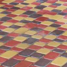
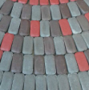
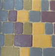
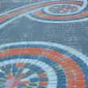

Тротуарна плиткаСтаре місто





- Розміри:
- 120х60, 120х90, 120х120, 120х180
- Кольори:
Старе місто. Плитка цієї форми має округлені кути, що робить її схожою на середньовічний камінь. Невибаглива до дизайнерських розробок, бруківка Старе місто завжди виглядатиме оригінально, адже кожна ділянка - це щоразу інший візерунок з розмаїття каменів!